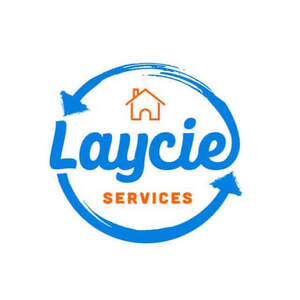

Trade Mark Journal No.2025/045 7 November 2025
UK00004285018 28 October 2025 (35,37,39)

- Class 35
- Administrative services relating to customs clearance; Retail services connected with the sale of furniture; Cost price analysis regarding waste disposal, removal, handling and recycling.
- Class 37
- Site clearance; Cleaning of property; Waste removal [cleaning]; Waste disposal [cleaning service]; Hazardous waste clean-up services; Waste disposal for others [cleaning service]; Stain removal; Rust removal; Removal of debris from buildings; Trash collection [refuse clean-up]; Cleaning of residential houses; Cleaning of office buildings and commercial premises; Cleaning of building interiors; Cleaning of buildings [interior]; Cleaning services; Domestic cleaning services; Office cleaning services; Cleaning of offices; Dismantling services.
- Class 39
- Clearance [removal and transportation] of waste; Removal of waste; Waste removal; Waste removal [transport]; Clearance [removal and transportation] of liquid waste; Waste disposal [transporation]; Disposal [transport] of waste; Dumping [transportation] of waste; Transportation of waste to disposal sites; Waste collection; Transportation of waste; Waste transport; Removal services; Hazardous waste transport services; Collection of domestic and industrial waste and trash; Collection of liquid waste; Storage of waste; Transportation of medical waste and special waste; Transport of contaminated waste; Collection of industrial waste; Collection of domestic waste; Collection of commercial waste; Transport and storage of waste; Removals; Furniture removals; Household removals; Removals (Household -); Commercial furniture removals; Removal of domestic furniture; Removal services [moving services]; Household removal services; Removal of commercial furniture; Packing of goods for removal; Commercial removal services; Removal of domestic goods; Removal of household goods; Removal of office equipment; Industrial removal services [transportation]; Removal of personal effects; Moving van services.
Laycie Services Limited